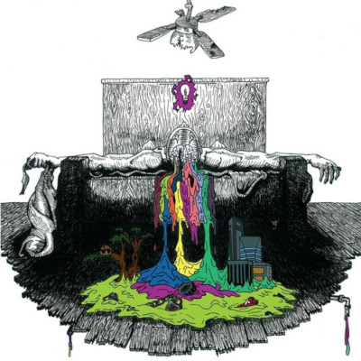
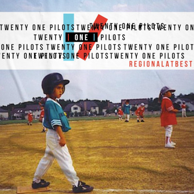
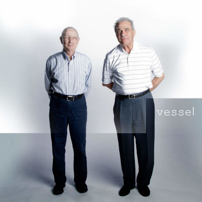
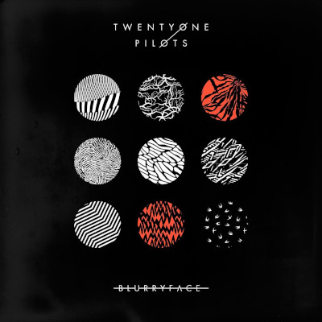
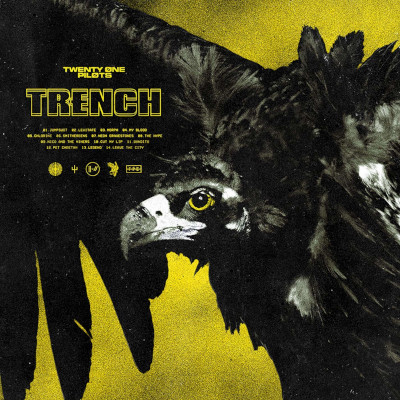
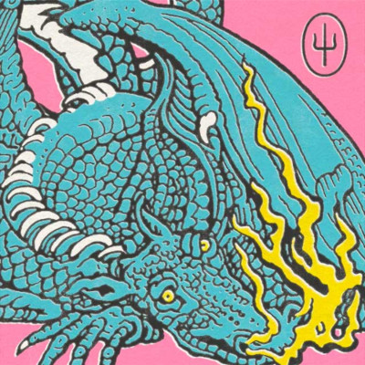

Twenty One Pilots
Publicado el 29 de diciembre de 2009.
62:00min
- Implicit Demand For Proof
- Fall Away
- The Pantaloon
- Addict With A Pen
- Friend, please
- March To The Sea
- Johnny Boy
- Oh Ms. Believer
- Air Catcher
- Trapdoor
- A Car, A Torch, A Death
- Taxi Cab
- Before You Start Your Day
- Isle Of Flightless Birds

Regional At Best
Publicado el 8 de julio de 2011.
68:38min
- Guns for Hands
- Holding on to You
- Ode to Sleep
- Showtown
- Car Radio
- Forest
- Glowing Eyes
- Kitchen Sink
- Anathema
- Lovely
- Ruby
- Trees
- Be Concerned
- Clear
Bonus Tracks
- House of Gold
- Two

Vessel
Publicado el 8 de enero de 2013.
47:44min
- Ode to Sleep
- Holding on to You
- Migraine
- House of Gold
- Car Radio
- Semi-Automatic
- Screen
- The Run and Go
- Fake You Out
- Guns for Hands
- Trees
- Truce

Blurryface
Publicado el 17 de mayo de 2015.
52:17min
- Heavydirtysoul
- Stressed Out
- Ride
- Fairy Local
- Tear in My Heart
- Lane Boy
- The Judge
- Doubt
- Polarize
- We Don't Believe What's on TV
- Message Man
- Hometown
- Not Today
- Goner

Trench
Publicado el 5 de octubre de 2018.
56:06min
- Jumpsuit
- Levitate
- Morph
- MY Blood
- Chlorine
- Smithereens
- Neon Gravestones
- The Hype
- Nico and the Niners
- Cut My Lip
- Bandito
- Pet Cheetah
- Legend
- Leave The City

Scaled And Icy
Publicado el 21 de mayo de 2021.
37:42min
- Good Day
- Choker
- Shy Away
- The Outside
- Saturday
- Never Take It
- Mulberry Street
- Formidable
- Bounce Man
- No chances
- Redecorate
